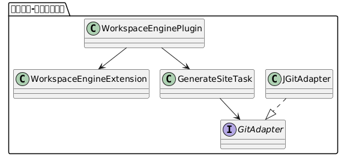
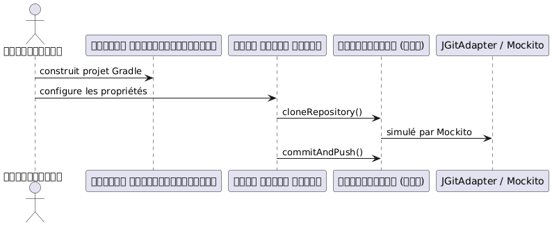

JBake और JGit के साथ कॉन्फ़िगरेबल कोटलिन Gradle प्लगिन का TDD
Publié le 09 July 2025
यह पोस्ट Kotlin DSL में लिखे गए Gradle प्लगिन की संपूर्ण डिज़ाइन और परीक्षण (TDD) प्रक्रिया प्रस्तुत करती है। यह प्लगिन JBake और JGit के माध्यम से Git तैनाती के साथ स्थिर साइटों की पीढ़ी को स्वचालित करता है, सब कुछ YAML कॉन्फ़िगरेशन फ़ाइल से।
उद्देश्य
एक Gradle प्लगइन बनाएँ :
-
Kotlin DSL में कॉन्फ़िगरेबल ;
-
सक्षम
-
JBake से एक स्थिर साइट उत्पन्न करें ;
-
JGit का उपयोग करके दूरस्थ Git रिपॉजिटरी पर तैनात करें;
-
CI/CD वर्कफ़्लो में एकीकृत करने योग्य ;
-
TDD दृष्टिकोण के अनुसार परीक्षण किया गया।
घोषणात्मक विन्यास
यहाँ YAML कॉन्फ़िगरेशन का एक उदाहरण है जिसे हमारे DSL में मॉडेल किया जाना है :
bake:
srcPath: "./site/jbake"
destDirPath: "bake"
pushPage:
from: "bake"
to: "cvs"
repo:
name: "trainings"
repository: "https://github.com/pages-content/trainings.git"
credentials:
username: "USERNAME"
password: "SECRET_TOKEN"
branch: "main"
message: "cheroliv.com"यह कॉन्फ़िगरेशन Kotlin DSL में एक घोषणीय Gradle एक्सटेंशन के माध्यम से प्रतिनिधित्व की जाती है।
प्लगइन की आर्किटेक्चर

DSL एक्सटेंशन की परिभाषा
open class WorkspaceEngineExtension {
var outputDir: String = "build/site"
var template: String = "freemarker"
var repoUrl: String = ""
var branch: String = "main"
var message: String = "Generated by engine"
}कस्टमाइज़्ड कार्य की परिभाषा
abstract class GenerateSiteTask : DefaultTask() {
lateinit var gitAdapter: GitAdapter
@get:Input abstract val repoUrl: Property<String>
@get:InputDirectory abstract val outputDir: DirectoryProperty
@get:Input abstract val branch: Property<String>
@get:Input abstract val message: Property<String>
@TaskAction
fun run() {
val repo = gitAdapter.cloneRepository(repoUrl.get(), outputDir.get().asFile)
gitAdapter.commitAndPush(repo, branch.get(), message.get())
}
}इंटरफ़ेस GitAdapter
interface GitAdapter {
fun cloneRepository(uri: String, directory: File): Repository
fun commitAndPush(repo: Repository, branch: String, message: String)
}JGit के साथ वास्तविक कार्यान्वयन
class JGitAdapter : GitAdapter {
override fun cloneRepository(uri: String, directory: File): Repository {
return Git.cloneRepository()
.setURI(uri)
.setDirectory(directory)
.call()
.repository
}
override fun commitAndPush(repo: Repository, branch: String, message: String) {
Git(repo).use {
it.add().addFilepattern(".").call()
it.commit().setMessage(message).call()
it.push().call()
}
}
}कॉन्फ़िगरेशन DSL कोटलिन
workspaceEngine {
outputDir = "build/out"
template = "freemarker"
repoUrl = "https://github.com/cheroliv/trainings.git"
branch = "main"
message = "deploy from plugin"
}मॉकिटो के साथ यूनिट टेस्ट
निर्भरताएँ
testImplementation("org.mockito:mockito-core:5.12.0")
testImplementation("org.mockito.kotlin:mockito-kotlin:5.2.1")
testImplementation("org.junit.jupiter:junit-jupiter:5.10.0")गिट व्यवहार का परीक्षण
class GenerateSiteTaskMockitoTest {
@TempDir
lateinit var tempDir: File
@Test
fun `task should call clone and commitAndPush`() {
val project = ProjectBuilder.builder().build()
val task = project.tasks.create("generateSite", GenerateSiteTask::class.java)
val mockGitAdapter = mock<GitAdapter>()
val mockRepo = mock<Repository>()
whenever(mockGitAdapter.cloneRepository(any(), any())).thenReturn(mockRepo)
task.gitAdapter = mockGitAdapter
task.repoUrl.set("https://github.com/cheroliv/test.git")
task.outputDir.set(project.layout.projectDirectory.dir(tempDir.name))
task.branch.set("main")
task.message.set("test commit")
task.run()
verify(mockGitAdapter).cloneRepository(eq("https://github.com/cheroliv/test.git"), any())
verify(mockGitAdapter).commitAndPush(eq(mockRepo), eq("main"), eq("test commit"))
}
}
निष्कर्ष
ज़िम्मेदारियों का पृथक्करण vía`GitAdapter`यह Gradle प्लगिन विकास में TDD को पूरी तरह से लागू करने की अनुमति देता है :
-
Git कॉल अमूर्त और परीक्षण योग्य हैं ;
-
DSL कॉन्फ़िगरेशन साफ़ और स्पष्ट है ;
-
प्लगिन वास्तविक कार्यान्वयन से निरपेक्ष रहता है।
यह दृष्टिकोण उच्च परीक्षणीयता और विस्तार क्षमता (GitHub API, GitLab, आदि की ओर) सुनिश्चित करता है।
आगामी कदम
-
JBake जनरेशन को एक के रूप में एकीकृत करें`BakeAdapter`
-
एकीकृत परीक्षण जोड़ें के साथ`GradleRunner`
-
फ़ाइलों की स्वचालित लोडिंग का समर्थन करें`site.yml`के माध्यम से SnakeYAML